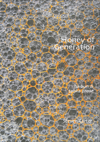

Patricia Prime
Auckland, New Zealand
A Review of Steven Carter's Honey of Generation: Haibun & Tanka Prose
Steven Carter, Honey of Generation: Haibun & Tanka Prose, Alba Publishing, Uxbridge: United Kingdom, 2017. Paperback, 78 pp. ISBN: 978-1-910185-81-0. US$10 / UK £8 / E10. Steven Carter is a major presence in both poetry and prose. While he has constantly experimented with a pushed the boundaries of form and influence in his writing, his work returns often to key themes and ideas, preoccupations and effects that this collection throws into brilliant relief: a politics of language, social and natural relationships, how memory works, the perceptual world.
A father and grandfather, his haibun and tanka prose are not likely to feature more domestic issues. But the far-ranging, tenacious, conceptual, romantic poet, with his rich and intellectually rigorous voice, is the same, and tracing that voice through his poetry is one of the pleasures readers will take from this book.
Several of the poems have been written about the passing of time and it’s good that they can make sense of some of Carter’s traumatic experiences. In the first four-part poem “Elegies, for example, he writes about a girl he first met in a group home. He opens the tanka prose with these words:
After her mother killed herself by jumping off the Golden Gate Bridge, Annie’s father pulled her from the group home. I never saw her again.
The language reverberates with the orderly sequence of time passing, the trustworthiness of memory and especially the self as centred meaning-maker.
What’s interesting about the poem “Journey” may be the way it recalls the lost Anasazi:
Anasazi = A Navajo word meaning The Ancient Ones.
Even the Navajo hadn’t a clue as to what happened to them. They just took off for parts unknown, hoping to catch up with the life-giving monsoon moisture which forsook them.
The poem recalls the Anasazi’s history and gets to the point lucidly.
But more often what’s enjoyable is when a poem veers off, carried along by momentum, towards a destination the reader may not be anticipating. Such a poem is “In the Crowd”, where a girl is seen walking ahead of the poet. Someone he never met “. . . never saw her face, but what remains in my fevered memory is the turn of a shapely ankle as she climbs the hotel steps and disappears through the tall entrance.” The poem ends
But all these tableaux and more are stitched together by the delicate curve of her high-heeled ankle, the sun low on the horizon, a day moon, and the toss of her hair. And inevitably: all my losses before and since.
The closing sentence gives us the sense, not only of inevitability, but the sadness of lost opportunities.
I enjoy the way Carter’s language ca be our co-conspirator in subverting the too-predictable meeting of the sign with its meaning or referent – can encourage or scepticism. It’s interesting to follow his thoughts and language that keeps on eluding a conclusion, such as we see in “1981”. Here, thirty years have passed, and the poet recalls something he can’t believe happened. As he sits on the end of the dock, sipping a beer, the weather makes a sudden change and a forty-foot high wall of cloud moves towards him: “Too mesmerised to move, I watch the water change from blue, to green, to gray, to black.”
Poetry makes a different kind of meaning to our recollections and memories. The differences are opened in Carter’s writing and multiplied by the passage of time. In “Labor Day”, he paints a picture of a lady who runs a campground and is filling a bag with ice:
In the eyes of the world she doesn’t have a lot going for her – to some, zilch. Overweight, squatty, she’s also cursed with a grating, irritating voice and lank, stringy hair.
In the title poem “Honey of Generation”, Carter recalls his paternal grandfather “who hailed from Kentucky and participated in the mid- to 19th-century family feuds.” “Poem beginning with an improvisation on Basho”, is quite a different type of poem, as the poet recalls the beauty of the women he’s loved:
Not long ago I spent an entire Sunday morning thinking of the women I’ve loved – all of them different: different looks, personalities backgrounds. Two of them shared the same first name; other than that –
blue blur –
bluebird or
patch of sky
|